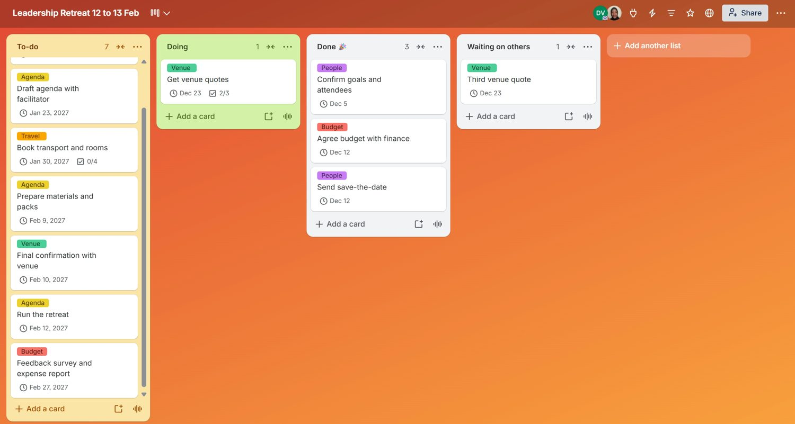

Operations and administration professional, working towards executive assistant roles
Seven years of keeping an office running: payments, payroll support, bookings, records and customer enquiries. I’m now building the remote tools and habits to support busy executives from anywhere.
See my practice projectGet in touchI’m based in Nairobi, Kenya, and I’ve worked as an office administrator since 2013. At a travel agency I checked salary calculations, processed staff payments and PAYE, handled client refunds, and coordinated tickets and travel documents. I’m careful with detail, calm when requests pile up, and used to handling confidential information.
I’m open to administrative, operations and customer service roles, whether remote, hybrid or on-site in Nairobi. My long-term goal is to work as an executive assistant.
Marwa Travel Agent Limited
Geconsult Architecture & Engineering Consultants
Sultan Furniture
Jara Kindergarten School
To show how I’d support a remote executive, I built a practice desk with a fictional CEO. It simulates an inbox of 20 emails, a task board and a weekly calendar, so I can practise the daily work of an executive assistant.
Sample project. All names and companies are fictional.
I planned a fictional two-day leadership retreat for a CEO, from first task to follow-up. It includes a dated task plan with owners, a timeline, a risk log with backup plans, and a weekly status report like the ones I would send an executive.
View the retreat planSample project. All names, dates and figures are fictional.
After years of coordinating tickets, bookings and client documents at a travel agency, I put together a sample itinerary for a fictional CEO’s business trip to Lagos. It has flight options with a recommendation, a day-by-day schedule, contacts, a pre-travel checklist and backup plans for things that go wrong.
View the Lagos itinerarySample project. All names, flights and bookings are fictional.
I rebuilt the leadership retreat plan on a Trello board, with lists for To do, Doing, Waiting on others and Done, colour labels, due dates and checklists. It shows how I track tasks, follow up with people and keep a project moving.

View the retreat board on TrelloPublic sample board. All names and details are fictional.
I also set up a Google Calendar for the same fictional CEO. It has her recurring meetings, plus events I booked from the practice inbox, such as the investor and client calls. I moved or avoided anything that clashed, like a clinic appointment during the site visit.
Open the full calendarPublic sample calendar. All names and events are fictional.
Email: Waredibow@gmail.com
LinkedIn: linkedin.com/in/dahabo-yusuf-guyo
Location: Nairobi, Kenya. Open to remote, hybrid and on-site roles.